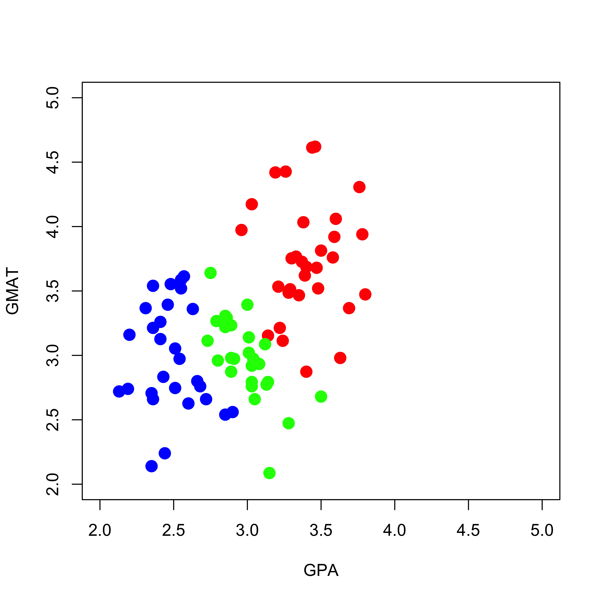

Just as in the continuous regression case, when the number of available explanatory variables is moderate or large, methods like nearest neighbours quickly become unfeasible, or their performance is not satisfactory. Classification trees provide a good alternative: they are still model-free (we do not need to assume anything about the true conditional probabilities of each class for a given vector of features X), but they are constrained to have a fairly specifc form. Intuitively (and informally) we could say (if nobody was listening) that this restriction provides some form of regularization or penalization.
Classification trees are constructed in much the same was as regression trees. We will construct a partition of the feature space (in “rectangular” areas), and within each region we will predict the class to be the most common class among the training points that are in that region. It is reasonable then to try to find a partition of the feature space so that in each area there is only one class (or at least, such that one class clearly dominates the others in that region). Hence, to build a classification tree we need a quantitative measure of the homogeneity of the classes present in a node. Given such a numerical measure, we can build the tree by selecting, at each step, the optimal split in the sense of yielding the most homogeneous child leaves possible (i.e. by maximizing at each step the chosen homogeneity measure). The two most common homogeneity measures are the Gini Index and the deviance (refer to the discussion in class). Although the resulting trees are generally different depending on which loss function is used, we will later see that this difference is not critical in practice.
As usual, in order to be able to visualize what is going on, we will illustrate the training and use of classification trees on a simple toy example. This example contains data on admissions to graduate school. There are 2 explanatory variables (GPA and GMAT scores), and the response has 3 levels: Admitted, No decision, Not admitted. The purpose here is to build a classifier to decide if a student will be admitted to graduate school based on her/his GMAT and GPA scores.
We first read the data, convert the response into a proper factor variable, and visualize the training set:
mm <-read.table("data/T11-6.DAT", header =FALSE)mm$V3 <-as.factor(mm$V3)# re-scale one feature, for better plotsmm[, 2] <- mm[, 2] /150plot(mm[, 1:2],pch =19, cex =1.5, col =c("red", "blue", "green")[mm[, 3]],xlab ="GPA", "GMAT", xlim =c(2, 5), ylim =c(2, 5))

Next we build a classification tree using the Gini index as splitting criterion.
library(rpart)a.t <-rpart(V3 ~ V1 + V2, data = mm, method ="class", parms =list(split ="gini"))plot(a.t, margin =0.05)text(a.t, use.n =TRUE)
If we use the deviance as splitting criterion instead, we obtain the following classification tree (also using the default stopping criteria):
a.t <-rpart(V3 ~ V1 + V2, data = mm, method ="class", parms =list(split ="information"))plot(a.t, margin =0.05)text(a.t, use.n =TRUE)
The predicted conditional probabilities for each class on the range of values of the explanatory variables present on the training set can be visualized exactly as before:
aa <-seq(2, 5, length =200)bb <-seq(2, 5, length =200)dd <-expand.grid(aa, bb)names(dd) <-names(mm)[1:2]p.t <-predict(a.t, newdata = dd, type ="prob")
We display the estimated conditional probabilities for each class:
Just like regression trees, classification trees generally perform better if they are built by pruning an overfitting one. This is done in the same way as it is done for classification trees. When we do it on the graduate school admissions data we indeed obtain estimated conditional probabilities that appear to be more sensible (less “simple”):